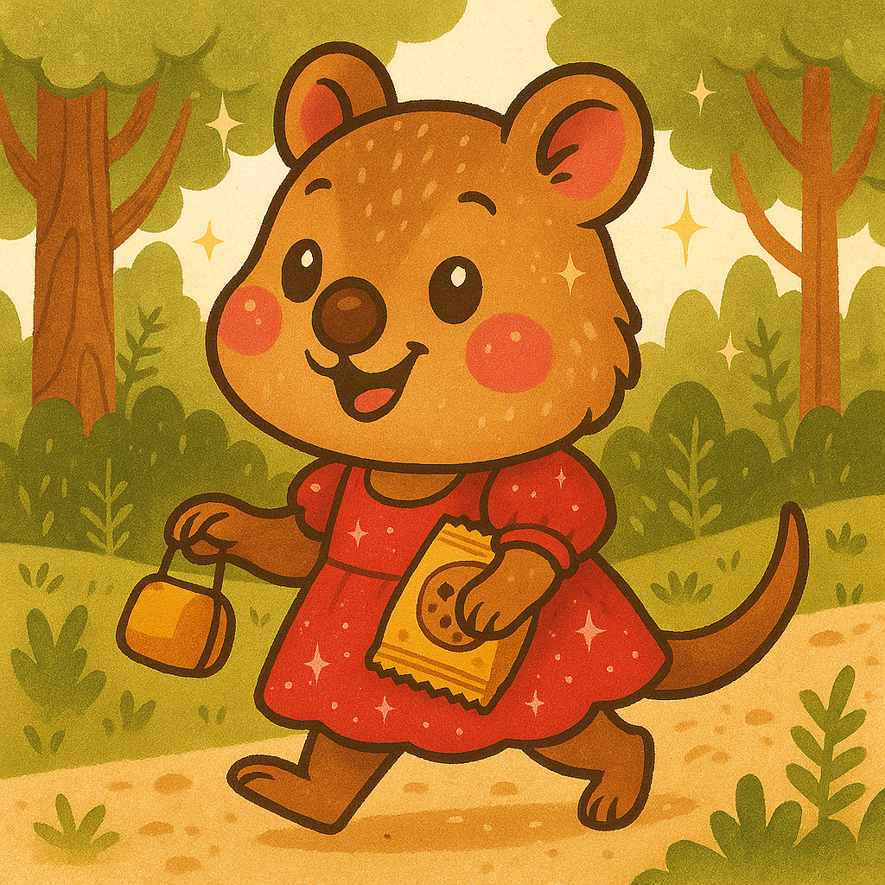

We Are The Residents!
Introducing the wonderful people of Quokkaville! Each profile shares fun facts, hobbies, and favorite spots around town, letting visitors meet locals, learn about their personalities, and feel connected. It’s a colourful, friendly way to celebrate our community and showcase the unique stories of everyone who calls Quokkaville home.
Mayor Quincy McQuokka
Mayor Quincy McQuokka has called Quokkaville home since the day he popped out of his pouch, and for the past seven years he’s proudly worn the mayor’s sash (sometimes right over his burgundy jacket). Everything Quincy loves seems to come in shades of burgundy—his house, his wardrobe, even his board game of choice, The Castles of Burgundy. Spot him strolling through town and you’ll know it’s him by the grin, the jacket, and maybe a faint whiff of victory from last night’s board-game marathon.
Sasha McQuokka
 Sasha McQuokka is the cheerful six-year-old daughter of Mayor Quincy McQuokka. Every morning, she slips into her favourite pink sparkly dress and heads out to her garden, where rows of daisies and tulips wait for her gentle watering can. She hums while she works, sprinkling each petal like she’s sharing a secret. The townsfolk of Quokkaville often see her skipping down the lane, glitter catching in the sunlight, leaving tiny spark trails behind her. Though she’s small, Sasha’s kindness is well known—flowers seem to bloom brighter under her care, and her laughter makes the whole town feel lighter.
Sasha McQuokka is the cheerful six-year-old daughter of Mayor Quincy McQuokka. Every morning, she slips into her favourite pink sparkly dress and heads out to her garden, where rows of daisies and tulips wait for her gentle watering can. She hums while she works, sprinkling each petal like she’s sharing a secret. The townsfolk of Quokkaville often see her skipping down the lane, glitter catching in the sunlight, leaving tiny spark trails behind her. Though she’s small, Sasha’s kindness is well known—flowers seem to bloom brighter under her care, and her laughter makes the whole town feel lighter.
Rosie McQuokka
Meet Rosie McQuokka, the cheerful four-year-old daughter of Quokkaville’s mayor! Rosie never leaves home without her favorite sparkly red dress—it twirls just right when she skips down the forest paths. Every afternoon, she rounds up her friends for a grand adventure among the gum trees, laughing as they spot butterflies and race the breeze. Her secret to keeping everyone happy? Snacks—always snacks. From crunchy crackers to sweet berry bites, Rosie’s little orange bag is a treasure chest of treats. With a giggle and a wink, she says, “A good explorer never walks hungry!” And everyone happily agrees.
Nina Newshound
 Nina Newshound is the heartbeat of Quokkaville’s favourite paper, The Daily Smile. With a camera around her neck and a notepad in paw, she’s always chasing the next big story—whether it’s Mayor Quincy’s new playground or the mysterious case of the missing muffins. She writes, edits, photographs, and even runs the printing press, all with her signature grin. Locals say you can hear her typewriter clacking before sunrise and smell the ink before breakfast. For Nina, every headline is a chance to spread cheer—and in Quokkaville, good news always travels fast, thanks to its happiest reporter.
Nina Newshound is the heartbeat of Quokkaville’s favourite paper, The Daily Smile. With a camera around her neck and a notepad in paw, she’s always chasing the next big story—whether it’s Mayor Quincy’s new playground or the mysterious case of the missing muffins. She writes, edits, photographs, and even runs the printing press, all with her signature grin. Locals say you can hear her typewriter clacking before sunrise and smell the ink before breakfast. For Nina, every headline is a chance to spread cheer—and in Quokkaville, good news always travels fast, thanks to its happiest reporter.
Wesley "Webby" Webster
Wesley “Webby” Webster is Quokkaville’s resident tech genius — and possibly its happiest coder. Every morning, he slips on his favourite blue tee, black shorts, and trusty Crocs before settling into his cozy desk, coffee steaming beside him. Lines of colourful code dance across his monitors as he builds websites for local shops, updates the mayor’s gaming webpage, and keeps the town’s official website running. Outside his window, Quokkaville hums with life — bicycles whizzing by, kookaburras calling from the trees. Webby just grins and keeps typing. After all, in Quokkaville, good code means good vibes.
Finnegan Longtail
 Meet Finnegan Longtail, the cheerful reporter for The Daily Smile. With his bright green shirt, lucky red fedora and trusty press badge, he’s always ready to chase a story—or some fresh local honey! Finnegan’s love for honey comes from his favourite pastime: beekeeping. When he’s not writing about town happenings, he’s tending to his buzzing friends and collecting jars of golden honey to share with neighbours. His cousin, Gannegan Longtail, might be a swimming champ, but Finnegan’s all about the sweet side of life. Whether he’s covering festivals or bee adventures, Finnegan always adds a touch of honeyed happiness to every headline!
Meet Finnegan Longtail, the cheerful reporter for The Daily Smile. With his bright green shirt, lucky red fedora and trusty press badge, he’s always ready to chase a story—or some fresh local honey! Finnegan’s love for honey comes from his favourite pastime: beekeeping. When he’s not writing about town happenings, he’s tending to his buzzing friends and collecting jars of golden honey to share with neighbours. His cousin, Gannegan Longtail, might be a swimming champ, but Finnegan’s all about the sweet side of life. Whether he’s covering festivals or bee adventures, Finnegan always adds a touch of honeyed happiness to every headline!
Gannegan "Gangly" Longtail
Gannegan Longtail is the quick-witted reporter who brings Quokkaville’s stories to life in The Daily Smile. Every morning, before chasing headlines, he dives into the lake for his daily swimming training session — says it clears his head and polishes his charm. With his long legs and easy grin, Gannigan’s known for introducing himself as “one-third of tall, dark, and handsome,” a line that earns both eye-rolls and laughs. When he’s not writing or swimming, he’s the go-to quokka for reaching anything on the top shelf. Gannegan insists that’s his real journalistic edge — the higher the view, the better the story.
Grandma McQuokka
 Every whiff of cabbage and spice drifting through Quokkaville means only one thing—Grandma McQuokka is at it again! Known far and wide for her legendary cabbage rolls, Grandma starts from scratch each morning, rolling up tender leaves, fresh garden veggies, and a sprinkle of secret seasoning (which she claims is “just love”). Neighbours follow the delicious aroma right to her kitchen window, hoping for a taste. Rosie and Sasha love helping her stir and sneak tiny samples before dinner. When Grandma cooks, the whole town gathers, bellies rumbling and hearts warm—because in Quokkaville, nothing says home like her cabbage rolls!
Every whiff of cabbage and spice drifting through Quokkaville means only one thing—Grandma McQuokka is at it again! Known far and wide for her legendary cabbage rolls, Grandma starts from scratch each morning, rolling up tender leaves, fresh garden veggies, and a sprinkle of secret seasoning (which she claims is “just love”). Neighbours follow the delicious aroma right to her kitchen window, hoping for a taste. Rosie and Sasha love helping her stir and sneak tiny samples before dinner. When Grandma cooks, the whole town gathers, bellies rumbling and hearts warm—because in Quokkaville, nothing says home like her cabbage rolls!
Patricia "Peddles" Peddlington
 Patricia “Peddles” Peddlington is the unstoppable whirlwind of Quokkaville’s cycling scene. With a grin as bright as her bike’s chrome and legs that could outspin a tailwind, she tears through the “Tour de Quokkaville” every year. When she’s not racing, you’ll find her at Peddles’ Bike Shop and Repairs, covered in grease and laughter, tuning up bikes and spirits alike. She swears every bolt has a personality, and every chain hums a story. Folks say you can hear her humming down Main Street long before you see the blur of purple and joy that is Peddles herself.
Patricia “Peddles” Peddlington is the unstoppable whirlwind of Quokkaville’s cycling scene. With a grin as bright as her bike’s chrome and legs that could outspin a tailwind, she tears through the “Tour de Quokkaville” every year. When she’s not racing, you’ll find her at Peddles’ Bike Shop and Repairs, covered in grease and laughter, tuning up bikes and spirits alike. She swears every bolt has a personality, and every chain hums a story. Folks say you can hear her humming down Main Street long before you see the blur of purple and joy that is Peddles herself.